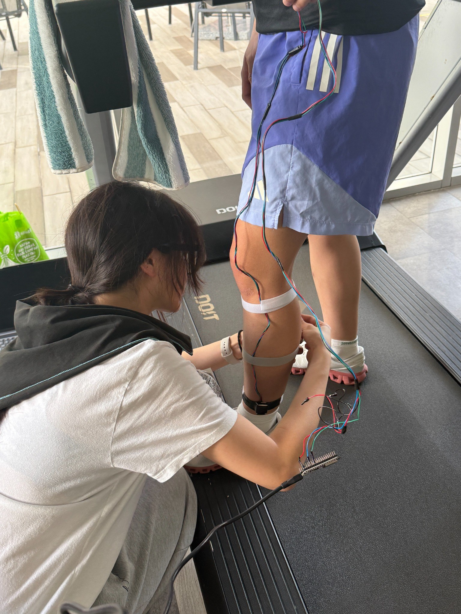
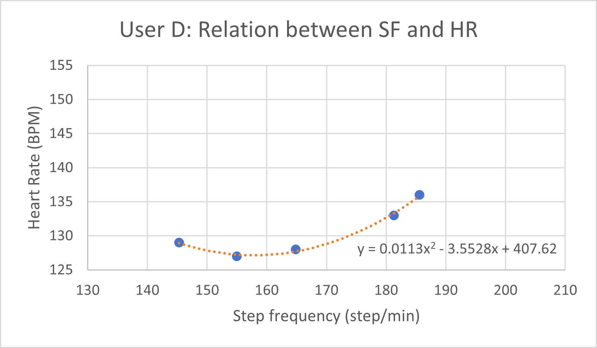
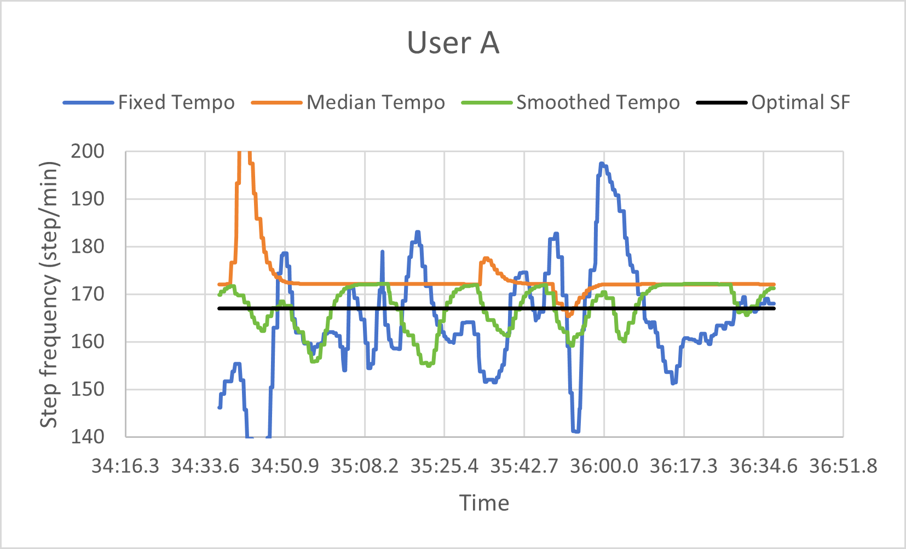

When better performance doesn't mean a better experience.
Designing and evaluating a wearable rhythm-guidance system that helps runners maintain their target cadence—without sacrificing comfort and attention.

A running coach you can feel, not watch.
Running cadence often drifts with fatigue and changing pace. We investigated whether wearable sensing and adaptive musical cues could guide runners toward an individualized target without demanding their visual attention.
Team project by Zhang Jingtong, Zhou Ziqin, Sun Yingchao and Wang Yujie · National University of Singapore · 2025. Results are team-level findings; individual contributions should be verified before publication.
From measurement to meaningful guidance.
Existing cadence tools can display steps per minute or play a fixed metronome. Our research question was different: how should a system adapt rhythmic feedback in real time, and how does that adaptation affect both running behavior and perceived experience?
Personalize the target
Use treadmill trials at different step frequencies and heart-rate measurements to estimate each participant's optimal cadence.
Compare three strategies
Fixed, median-based, and smoothed adaptive tempo guidance each respond differently to real-time cadence.
Test performance & feeling
Measure cadence stability and adherence alongside comfort, followability, and attention friendliness.
Three generations. One more wearable system.
We moved from a wired proof of concept to a compact, wireless ankle-worn device. The evolution addressed sensing feasibility, connection complexity and real-world wearability.
From bulky to wearable
Generation 1 used Arduino Uno with IMU and heart-rate sensing. Generation 2 used ESP32 and an external IMU. Generation 3 integrated the controller and sensor into a 45 g, fully wireless device with approximately 10 hours of operation.
Feedback without a screen
Real-time cadence data travels over Wi-Fi to a laptop, where Python applies a guidance algorithm. The adjusted rhythm is then played through wireless earphones.
Testing what people do—and how they feel.
Six female participants aged 21–24 took part in a controlled treadmill study. The research combined objective sensor data with post-trial subjective questionnaires.
Determine target cadence
Four three-minute runs at 140, 160, 180 and 200 SPM, with rest between trials. Cadence and heart rate were used to estimate an individualized optimal cadence.

Compare guidance methods
Participants completed three three-minute trials with fixed, median and smoothed adaptive tempo guidance, followed by questions about comfort, followability and distraction.

The report's procedure used a fixed condition order. The sample is small and treadmill-based, so these findings are exploratory rather than population-level claims.
The trade-off behind the numbers.
Explore the normalized team-study scores. Switching between objective and subjective measures reveals why the most stable strategy was not the most comfortable one.
Source: CDE5312 Team 5 Report, Tables 1–2 (p. 13). Values are normalized comparison scores, not raw SPM or percentages of participants.
Median tempo
Median guidance produced the strongest cadence stability and continuous stability duration scores, yet received the lowest subjective ratings for comfort, followability and attention friendliness.
Smoothed adaptive tempo
Smoothed adaptation performed better than fixed guidance across nearly all evaluated dimensions and provided a more balanced compromise between control and comfort.
The technically strongest response is not necessarily the most human-friendly one.
Rapid tempo changes may impose cognitive load and interrupt the runner's flow. A smoother response can create a better balance between performance and perceived ease of use. This is a hypothesis supported by the small exploratory study, not a causal proof.
Designing for the whole experience.
Prioritize comfortable feedback
Evaluate adaptation smoothness and attention demand alongside measurement accuracy.
Respect context
Extend testing beyond treadmills, with more diverse runners and longer sessions.
Keep iterating
Improve IMU outlier handling, latency, and phase-specific guidance behavior.